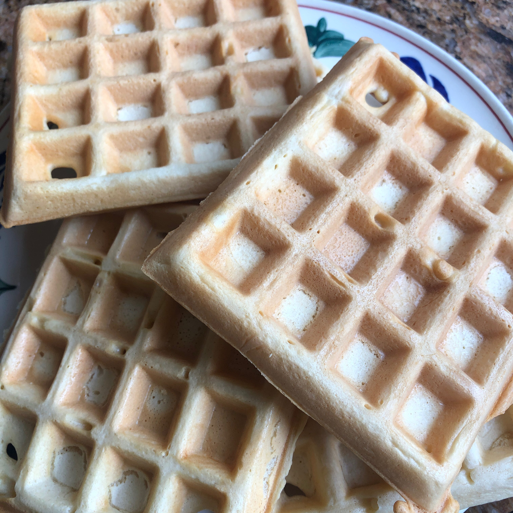

Classic Waffles

A lovely, crispy waffle perfect for the morning.
These delicious waffles are a surefire way to start your morning on the right note!
Ingredients
- 2 cups all-purpose flour
- 1 teaspoon salt
- 4 teaspoons baking powder
- 2 tablespoons white sugar
- 2 eggs
- 1 ½ cups warm milk
- ⅓ cup butter, melted
- 1 teaspoon vanilla extract